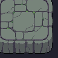
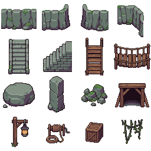

石の層 — Retro Diffusion タイルセット
採掘洞窟の石床・崖・吊り橋。広い色面と暗紫の輪郭、32px地形／64px装飾。
接続サンプル
9分割地形の辺と中央を繰り返した矩形の足場。橋・階段は独立パーツ。ゲームの当たり判定は未接続です。
地形チップ / 32×32

崖・構造物・装飾 / 64×64

前壁、端壁、内角壁／階段2方向、橋2方向／岩、石柱、瓦礫、坑口／灯具、巻き上げ機、木箱、蔦。
生成：Retro Diffusion RD Pro。画像の透明化・切り出し・整数倍書き出しのみローカル処理。